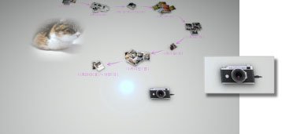

PS3™に写真を取り込む
PS3™の本体ストレージに写真が保存されているときは、フォトギャラリーを起動するだけで写真を見ることができます。PS3™に写真が保存されていないときは、デジタルカメラや記録メディアなどに保存された写真をPS3™に取り込んでください。
写真を取り込むときは、PS3™とデジタルカメラまたは記録メディアが挿入されたUSBアダプターをUSBケーブルでつなぎます。画面上のデジタルカメラの絵を選び、画面の指示に従って操作してください。

ヒント
- 取り込んだ写真はXMB™(クロスメディアバー）の
 （フォト）で見ることもできます。
（フォト）で見ることもできます。 - フォトギャラリーでは、写真を記録メディアに書き出すことはできません。フォトギャラリーを終了したあと、XMB™の（フォト）で操作してください。
- デジタルカメラや記録メディアの種類によっては写真が取り込めません。
- 他者の知的財産権を侵害しないよう注意してください。